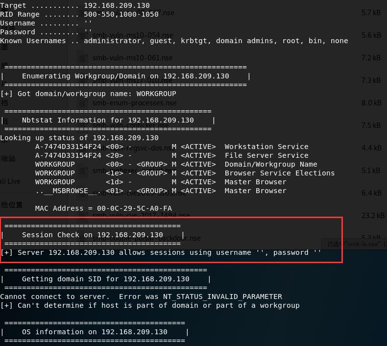

SMB协议
文件共享的一个协议，但是漏洞比较的多。
使用nmap进行扫描：nmap -v -p 139 445 192.168.126.1 --open
-v 是代表我们要查看详细信息，指定139和445端口，我们只查看–open的。
这种方式比较幼稚，我们可以使用：nmap 192.168.126.1 -p 139,445 --script=smb-os-discovery.nse
这个是用来发现开放SMB主机的。
-Pn参数是强制扫描，有防火墙的时候用到的。
我们使用命令：nmap -v -p 139,445 --script=smb-vuln-ms17-010.nse 192.168.209.130
这条命令可以检测永恒之蓝，最终存在的话呢，会出现以下的显示：
使用nbtscan -r 192.168.209.0/24
这个东西有的时候可以支持跨网段的扫描MAC。
我们使用enum4linux -a 192.168.209.130得到许多我们想要的结果：

可以看到有个Wokrstation Service（他可以去看别人的文件共享）File Server Service(他也开了文件共享)，并且我们还可以空连接进去。